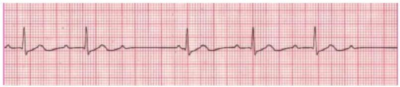
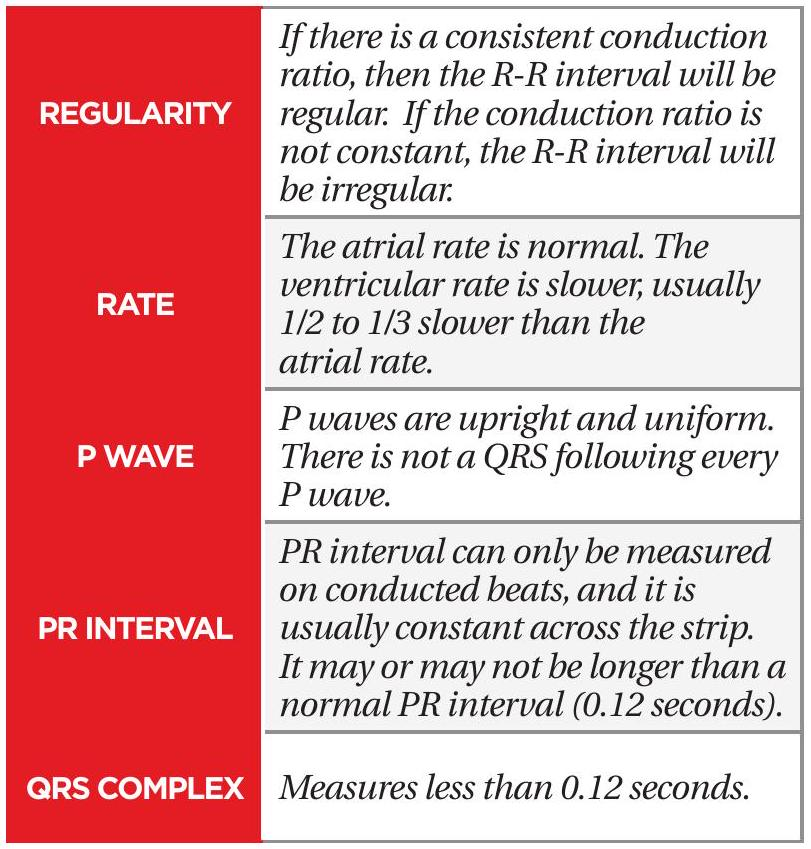
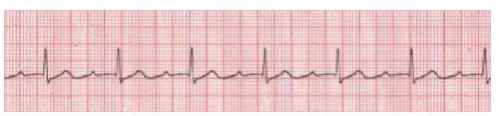
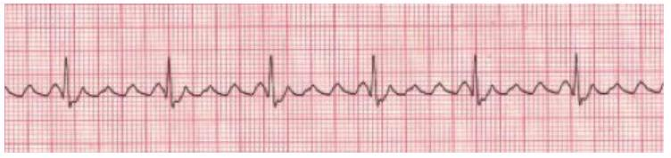
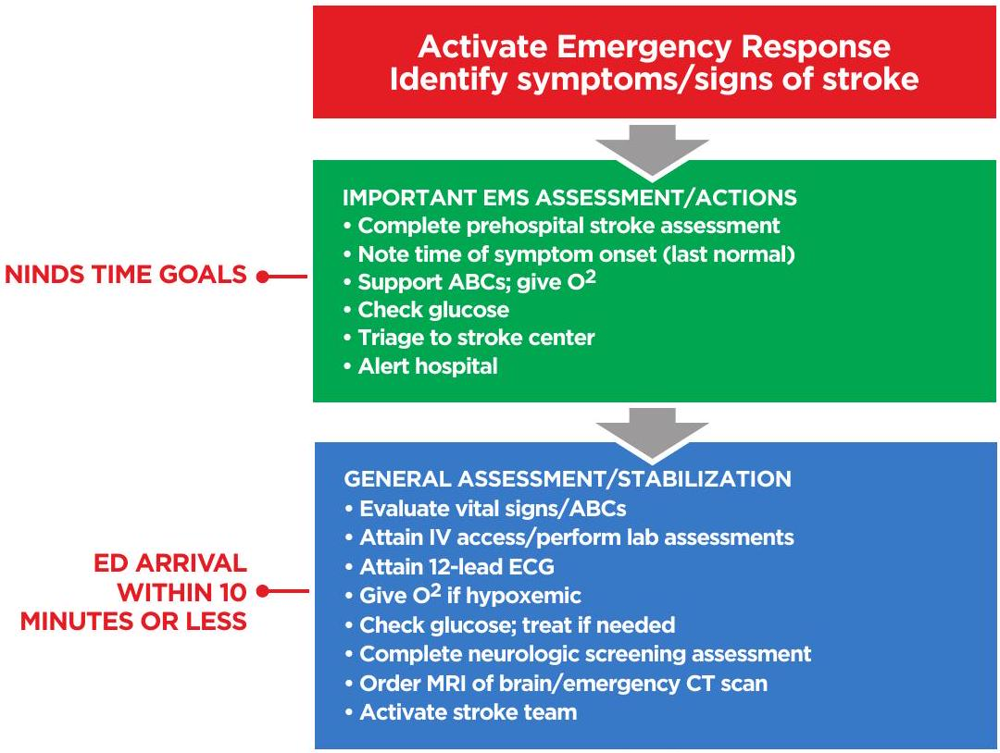
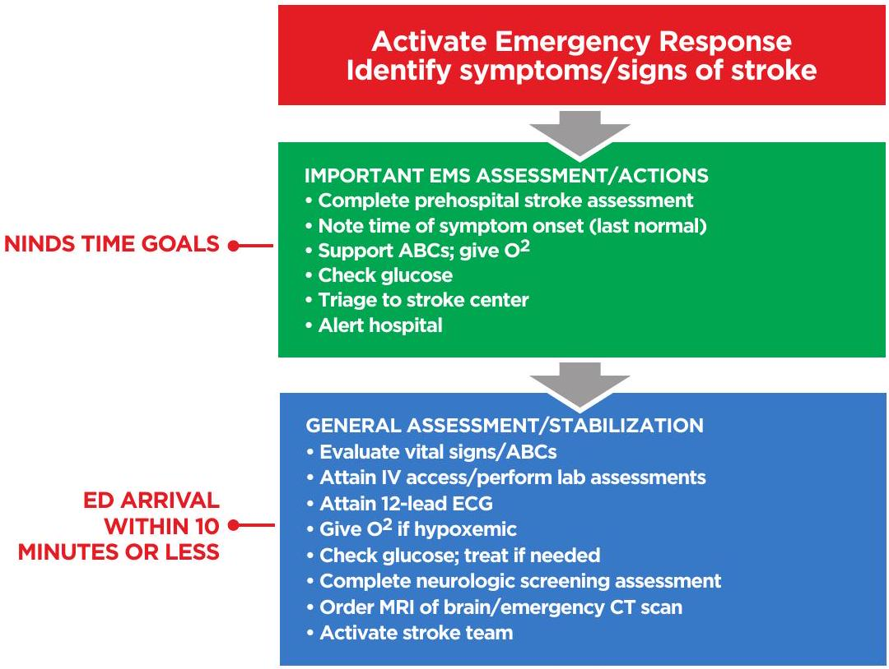

ACLS CASES
RESPIRATORY ARREST
Individuals with ineffective breathing patterns are considered to be in respiratory arrest and require immediate attention. There are many causes of respiratory arrest, including but not limited to cardiac arrest and cardiogenic shock. Resuscitate individuals in apparent respiratory arrest following BLS or ACLS protocols.
Respiratory arrest is an emergent condition in which the individual is either not breathing or is breathing ineffectively.
If someone is breathing ineffectively, it can be agonal or gasping respirations, which can often go unrecognized.


| ADVANCED | BASIC |
|---|---|
| Laryngeal mask airway Laryngeal tube Esophageal-tracheal tube Endotracheal tube |
Oropharyngeal Airway (OPA) Nasopharyngeal Airway (NPA) |
In Table 4, the airways listed in the left column are considered advanced airways, while those in the right column are basic airways. Although OPAs and NPAs are considered to be basic airways, they require proper placement by an experienced provider. Advanced airway placement requires specialized training which is beyond the scope of ACLS certification. However, all ACLS providers should be familiar with the proper management of advanced airways in order to be part of an effective life support team.
CPR is performed with the individual lying on their back; gravity will cause the jaw, the tongue, and the tissues of the throat to fall back and obstruct the airway. The airway rarely remains open in an unconscious individual without external support.
The first step in any airway intervention is to open the airway. This is accomplished by lifting the chin upward while tilting the forehead back (Figure 22). The goal is to create a straighter path from the nose to the trachea.
PULSELESS VENTRICULAR TACHYCARDIA AND VENTRICULAR FIBRILLATION
Pulseless ventricular tachycardia (VT) and Ventricular fibrillation (VF) are life-threatening cardiac rhythms that result in ineffective ventricular contractions. The ventricular motion of VF is not synchronized with atrial contractions. VT or VTach (Figure 25) is a condition in which the ventricles contract more than 100 times per minute. VF or VFib (Figure 24) is a rapid quivering of the ventricular walls that prevents them from pumping. The emergency condition, pulseless VT, occurs when ventricular contraction is so rapid that there is no time for the heart to refill, resulting in undetectable pulse. In both cases, individuals are not receiving adequate blood flow to the tissues. Despite being different pathological phenomena and having different ECG rhythms, the ACLS management of pulseless VT and VF are essentially the same. Pulseless VT and resuscitation for VF starts with the BLS Survey.
An AED reads and analyzes the rhythm and determines if a shock is needed. The AED is programmed to only prompt the user to defibrillate pulseless VT and VF rhythms. The machine does not know if the individual has a pulse or not. This is the primary reason you should not use an AED in someone with a palpable pulse. ACLS responses to pulseless VT and VF within a hospital will likely be conducted using a cardiac monitor and a manual defibrillator. Thus, the ACLS provider must read and analyze the rhythm. Shocks should only be delivered for pulseless VT and VF. Likewise, antiarrhythmic drugs and drugs to support blood pressure may be used.
RULES FOR VENTRICULAR FIBRILLATION (VF)
| REGULARITY | There is no regular shape of the QRS complex because all electrical activity is disorganized. |
| RATE | The rate appears rapid, but the disorganized electrical activity prevents the heart from pumping. |
| P WAVE | There are no P waves present. |
| PR INTERVAL | There are no PR intervals present. |
| QRS COMPLEX | The ventricle complex varies. |
RULES FOR VENTRICULAR TACHYCARDIA (REGULAR/RAPID WIDE COMPLEX TACHYCARDIA)

| REGULARITY | R-R intervals are usual, but not always, regular. |
| RATE | The atrial rate cannot be determined. Ventricular rate is usually between 150 and 250 beats per minute. |
| P WAVE | QRS complexes are not preceded by P waves. There are occasionally P waves in the strip, but they are not associated with the ventricular rhythm. |
| PR INTERVAL | PR interval is not measured since this is a ventricular rhythm. |
| QRS COMPLEX | QRS complex measures more than 0.12 seconds. The QRS will usually be wide and bizarre. It is usually difficult to see a separation between the QRS complex and the T wave. |
RULES FOR TORSADES DE POINTES (IRREGULAR WIDE COMPLEX TACHYCARDIA)
| REGULARITY | There is no regularity. |
| RATE | The atrial rate cannot be determined. Ventricular rate is usually between 150 and 250 beats per minute. |
| P WAVE | There are no P waves present. |
| PR INTERVAL | There are no PR intervals present. |
| QRS COMPLEX | The ventricle complex varies. |
PULSELESS ELECTRICAL ACTIVITY AND ASYSTOLE
Pulseless electrical activity (PEA) and asystole are related cardiac rhythms in that they are both life-threatening and unshockable cardiac rhythms. Asystole is a flat-line ECG (Figure 27). There may be subtle movement away from baseline (drifting flat-line), but there is no perceptible cardiac electrical activity. Always ensure that a reading of asystole is not a user or technical error. Make sure pads have good contact with the individual, leads are connected, gain is set appropriately, and the power is on. PEA is one of many waveforms by ECG (including sinus rhythm) without a detectable pulse. PEA may include any pulseless waveform with the exception of VF, VT, or asystole (Figure 28).
Hypovolemia and hypoxia are the two most common causes of PEA. They are also the most easily reversible and should be at the top of any differential diagnosis.
If the individual has return of spontaneous circulation (ROSC), proceed to post-cardiac arrest care.
RULES FOR PEA AND ASYSTOLE
A flatline ECG reveals no electrical activity and is reserved for asystole, whereas PEA reveals organized or semi-organized electrical activity in the absence of a palpable pulse.

| ORGANIZED OR SEMI-ORGANIZED | Any rhythm without a pulse. |
| RATE | Any rate or no rate. |
| P WAVE | Possible P wave or none detectable. |
| PR INTERVAL | Possible PR wave or none detectable. |
| QRS COMPLEX | Possible QRS complex or none detectable. |
| REGULARITY | The rhythm will be a nearly flat line. |
| RATE | There is no rate. |
| P WAVE | There are no P waves present. |
| PR INTERVAL | PR interval is unable to be measured due to no P waves being present. |
| QRS COMPLEX | There are no QRS complexes present. |
| THE H'S | THE T'S |
|---|---|
| Hypovolemia Hypoxia H+ (acidosis) Hypo/Hyperkalemia Hypoglycemia Hypothermia |
Tension pneumothorax Tamponade Toxins Thrombosis (coronary) Thrombosis (pulmonary) Trauma (unrecognized) |
STANDARD DOSE EPINEPHRINE IS VASOPRESSOR OF CHOICE
Epinephrine is still the best choice according to 2020 guidelines. Of sixteen observational studies on timing in the recent systematic review, all found an association between earlier epinephrine and ROSC for patients with nonshockable rhythms, although improvements in survival were not universally seen.
For patients with shockable rhythm, the literature supports prioritizing defibrillation and CPR initially and giving epinephrine if initial attempts with CPR and defibrillation are not successful.

CPR Quality
- Push hard (2-2.4" (5-6 cm)) and fast (100-120 bpm) and allow chest recoil
- Minimize interruptions
- Do not over ventilate
- If no advanced airway, 30:2 compression to ventilation ratio
- Quantitative waveform capnography
- If ETCO2 < 10 mmHg, attempt to improve CPR quality
Shock Energy
- Biphasic: Biphasic delivery of energy during defibrillation has been shown to be more effective than older monophasic waveforms. Follow manufacturer recommendation (e.g., initial dose of 120 to 200 J); if unknown, use the maximum dose available. Second and subsequent doses should be equivalent and higher doses should be considered.
- Monophasic: 360 J
Return of Spontaneous Circulation
- Return of pulse and blood pressure
- Sudden sustained increase in PETCO2 (typically ≥ 40 mmHg)
- Spontaneous arterial pressure waves with intra-arterial monitoring
Advanced Airway
- Supraglottic advanced airway or ET intubation
- Absolute placement confirmation:
- Negative Epigastric Auscultation
- Positive Bilateral Chest Auscultation
- Vocal Cord Visualization
- Quantitative ETCO2
- 10 breaths per minute with continuous chest compressions
Drug Therapy
- Epinephrine IV/IO Dose: 1 mg, administer as soon as possible then every 3 to 5 minutes after
- Amiodarone IV/IO Dose: first dose is 300 mg bolus, second dose is 150 mg
- Lidocaine: 1st dose: 1-1.5 mg/kg, second dose: 0.5-0.75 mg/kg
Reversible Causes
- Hypovolemia
- Hypoxia
- H+(acidosis)
- Hypothermia
- Hypo-/hyperkalemia
- Hypoglycemia
- Tamponade, cardiac
- Toxins
- Tension pneumothorax
- Thrombosis, pulmonary or coronary
- Trauma
POST-CARDIAC ARREST CARE
If an individual has a return of spontaneous circulation (ROSC), start post-cardiac arrest care immediately. The initial BLS/ACLS processes are meant to save an individual's life, while post-cardiac arrest care is meant to optimize ventilation and circulation, preserve heart and brain tissue/function, and to maintain recommended blood glucose levels. Pay close attention to oxygenation, blood pressure control, need for percutaneous coronary intervention, and ideal temperature management. The 2020 ILCOR Guidelines recommend formal assessment and support for an individual's continued physical, cognitive, and psychosocial needs because recovery from a cardiac arrest event continues long after the initial hospitalization. Be sure to remember to address the mental health needs of the First Responders also, and schedule a debriefing for lay rescuers, EMS providers, and hospital-based healthcare workers after a resuscitation event.
VOMIT - AN ACRONYM TO DESCRIBE POST-CARDIAC ARREST CARE
- Vital signs- Especially checking blood pressure.
- Oxygen- Do they need to be intubated at all, or do they need a type of oxygen apparatus?
- Myocardial infarction- Do they need to get to a chest pain center?
- Iv- Do they need IV fluids? Do they need a drip?
- Targeted Temperature Management (TTM)- Only if they are still unresponsive.
AIRWAY MANAGEMENT
- Early placement of advanced airway as needed
- Manage respiratory parameters:
- Keep 10 breaths per minute
- Pulse Ox goal 92-98%
- Titrate to PaCO2 35-45 mm Hg
- Waveform capnography (capnometry) to confirm ETT placement
BLOOD PRESSURE SUPPORT AND VASOPRESSORS
The Post-Cardiac Arrest Care Algorithm (Figure 30) was updated to emphasize the need to prevent hyperoxia, hypoxemia, and hypotension.
- Obtain early ECG.
- Consider blood pressure support in any individual with systolic blood pressure less than 90 mmHg or mean arterial pressure (MAP) less than 65.
- Unless contraindicated, 1 to 2 liters of IV saline or Lactated Ringer's is the first intervention.
- When blood pressure is very low, consider vasopressors (commonly referred to as "pressors"). Vasopressors and inotropes are medications used to create vasoconstriction or increase cardiac contractility, respectively. Consider using the following:
- Dopamine and norepinephrine are the pressors of choice for individuals who are not in cardiac arrest.
- Vasopressin and phenylephrine are the second agents to be added.
- Epinephrine is generally reserved for severe hypotension or as a last-line agent.
- Titrate the infusion rate to maintain the desired blood pressure.
TARGETED TEMPERATURE MANAGEMENT (TTM)
Targeted temperature management is the only documented intervention that improves/enhances brain recovery after cardiac arrest. Induced targeted temperature management can be performed in unresponsive individuals and should be continued for at least 24 hours. The goal of induced targeted temperature management is to maintain a core body temperature between 89.6 to 96.8 degrees F (32 to 36 degrees C) for at least 24 hours by using a cooling device with a feedback loop. Device manufacturers have developed several innovative technologies that improve the ability to affect and manage targeted temperature management in the post-arrest individual. Targeted temperature management should be induced and monitored by trained professionals. Induced targeted temperature management should not affect the decision to perform percutaneous coronary intervention (PCI), because concurrent PCI and targeted temperature management are reported to be feasible and safe.

VENTILATION/ OXYGENATION:
Avoid excessive ventilation. Start at 10 to 12 breaths per minute and titrate to target PACO2 of 35 to 45 mmHg.
DOSES/DETAILS
- IV Bolus: 1 to 2 liters normal saline or Lactated Ringer's.
- Epinephrine IV Infusion: 0.1 to 0.5 mcg/kg per minute
- Dopamine IV Infusion: 5 to 10 mcg/kg per minute
- Norepinephrine IV Infusion: 0.1 to 0.5 mcg/kg per minute
REVERSIBLE CAUSES:
- Hypovolemia
- Hypoxia
- H+ (acidosis)
- Hypothermia
- Hypo-/hyperkalemia
- Tamponade, cardiac
- Toxins
- Tension pneumothorax
- Thrombosis, pulmonary, or coronary
SYMPTOMATIC BRADYCARDIA
Bradycardia is defined as a heart rate of less than 60 beats per minute. While any heart rate less than 60 beats per minute is considered bradycardia, not every individual with bradycardia is symptomatic or having a pathological event. Individuals in excellent physical shape often have sinus bradycardia. Symptomatic bradycardia may cause a number of signs and symptoms including low blood pressure, pulmonary edema and congestion, abnormal rhythm, chest discomfort, shortness of breath, lightheadedness, and/or confusion. Symptomatic bradycardia should be treated with the ACLS Survey. If bradycardia is asymptomatic but occurs with an arrhythmia listed below, obtain a consultation from a cardiologist experienced in treating rhythm disorders.
SYMPTOMS OF BRADYCARDIA
- Shortness of breath
- Altered mental status
- Pulmonary edema/congestion
- Weakness/dizziness/lightheadedness
SYMPTOMATIC BRADYCARDIA REVIEW
- Sinus Bradycardia: Normal rhythm with slow rate
- First Degree AV Block: PR interval is longer than 0.20 seconds
- Type I Second Degree AV Block: PR interval increases in length until QRS complex is dropped
- Type II Second Degree AV Block: Constant PR intervals (may be prolonged) before a random QRS is dropped
- Third Degree AV Block: P waves and QRS complex are not coordinated with each other
Bradycardia Rhythm Strips and Rules
 | |
| REGULARITY | R-R intervals are regular, overall rhythm is regular. |
| RATE | The rate is less than 60 bpm, but usually more than 40 bpm. |
| P WAVE | There is one P wave in front of every QRS. The P waves appear uniform. |
| PR INTERVAL | Measures between 0.12 and 0.20 seconds in duration. PR interval is consistent. |
| QRS COMPLEX | Measures less than 0.12 seconds. |
|  | |
| REGULARITY | R-R intervals are regular, overall rhythm is regular. |
| RATE | The rate depends on the underlying rhythm. |
| P WAVE | There is one P wave in front of every QRS. The P waves appear uniform. |
| PR INTERVAL | Measures more than 0.20 seconds in duration. PR interval is consistent. |
| QRS COMPLEX | Measures less than 0.12 seconds. |
|  | |
| REGULARITY | R-R interval is irregular, but there is usually a pattern to it. The R-R interval gets longer as the PR interval gets longer. |
| RATE | The ventricular rate is usually slightly lower than the atrial rate due to some atrial beats not being conducted. The atrial rate is usually normal. |
| P WAVE | P waves are upright and uniform. Most complexes will have a P wave in front of them; however, there will be some P waves that do not have a QRS complex. |
| PR INTERVAL | PR interval gets progressively longer until there is a dropped QRS complex. |
| QRS COMPLEX | Measures less than 0.12 seconds. |
|  | |
| REGULARITY | R-R intervals are regular, overall rhythm is regular. |
| RATE | The rate depends on the underlying rhythm. |
| P WAVE | There is one P wave in front of every QRS. The P waves appear uniform. |
| PR INTERVAL | Measures more than 0.20 seconds in duration. PR interval is consistent. |
| QRS COMPLEX | Measures less than 0.12 seconds. |
 | |
| REGULARITY | R-R interval is regular. P-P interval is also regular. |
| RATE | The atrial rate is regular and normally 60 to 100. Rate of QRS complexes is dependent on the focus. If the focus is ventricular, the rate will be 20 to 40. If the focus is junctional, the rate will be 40 to 60. |
| P WAVE | P waves are upright and uniform. There is not a QRS following every P wave. |
| PR INTERVAL | Interval may be normal but is more likely to be prolonged. |
| QRS COMPLEX | Measures more than 0.12 seconds if the focus is ventricular. Measures less than 0.12 seconds if the focus is junctional. |

TACHYCARDIA
Tachycardia is a heart rate of greater than 100 beats per minute. When the heart beats too quickly, there is a shortened relaxation phase. This causes two main problems: the ventricles are unable to fill completely, causing cardiac output to decrease; and the coronary arteries receive less blood, causing supply to the heart to decrease.
- Tachycardia is classified as stable or unstable.
- Heart rates greater than or equal to 150 beats per minute usually cause symptoms.
- Unstable tachycardia always requires prompt attention.
- Stable tachycardia can become unstable.
SYMPTOMS OF TACHYCARDIA
- Hypotension
- Sweating
- Pulmonary edema/congestion
- Jugular venous distension
- Chest pain/discomfort
- Shortness of breath
- Weakness/dizziness/lightheadedness
- Altered mental state
SYMPTOMATIC TACHYCARDIA WITH HEART RATE > 150 BPM
- If the individual is unstable, provide immediate synchronized cardioversion.
- Is the individual's tachycardia producing hemodynamic instability and serious symptoms?
- Are the symptoms (i.e., pain and distress of acute myocardial infarction (AMI)) producing the tachycardia?
- Assess the individual's hemodynamic status and begin treatment by establishing IV, giving supplementary oxygen and monitoring the heart.
- Heart rate of 100 to 130 bpm is usually the result of underlying process and often represents sinus tachycardia. In sinus tachycardia, the goal is to identify and treat the underlying systemic cause.
- Heart rate greater than 150 bpm may be symptomatic; the higher the rate, the more likely the symptoms are due to the tachycardia.
- Assess the QRS Complex.
REGULAR NARROW COMPLEX TACHYCARDIA (PROBABLE SVT)
- Attempt vagal maneuvers.
- Obtain 12-lead ECG; consider expert consultation.
- Adenosine 6 mg rapid IVP; if no conversion, give 12 mg IVP (second dose); may attempt 12 mg once.
IRREGULAR NARROW COMPLEX TACHYCARDIA (PROBABLE A-FIB)
- Obtain 12-lead ECG; consider expert consultation.
- Control rate with diltiazem 15 to 20 mg (0.25 mg/kg) IV over two minutes or beta-blockers.
REGULAR WIDE COMPLEX TACHYCARDIA (PROBABLE VT)
- Obtain 12-lead ECG; consider expert consultation.
- Convert rhythm using amiodarone 150 mg IV over 10 minutes.
- Perform elective cardioversion.
IRREGULAR WIDE COMPLEX TACHYCARDIA
- Obtain 12-lead ECG; consider expert consultation.
- Consider anti-arrhythmic.
- If Torsades de Pointes, give magnesium sulfate 1 to 2 gm IV; may follow with 0.5 to 1 gm over 60 minutes.
STABLE AND UNSTABLE TACHYCARDIA
 | |
| REGULARITY | R-R intervals are regular, overall rhythm is regular. |
| RATE | The rate is over 100 bpm but usually less than 150 bpm. |
| P WAVE | There is one P wave in front of every QRS. The P waves appear uniform. |
| PR INTERVAL | Measures between 0.12-0.20 seconds in duration. PR interval is consistent. |
| QRS COMPLEX | Measures less than 0.12 seconds. |
|  | |
| REGULARITY | The atrial rate is regular. The ventricular rate will usually be regular, but only if the AV node conducts the impulses in a consistent manner. Otherwise, the ventricular rate will be irregular. |
| RATE | The atrial rate is normally between 250 to 350. Ventricular rate depends on conduction through the AV node to the ventricles. |
| P WAVE | The P waves will be well defined and have a "sawtooth" pattern to them. |
| PR INTERVAL | Due to the unusual configuration of P waves, the interval is not measured with atrial flutter. |
| QRS COMPLEX | QRS measures less than 0.12 seconds. |
 | |
| REGULARITY | The R-R intervals are irregular; therefore, overall rhythm is irregularly irregular. The ventricles conduct from different atrial foci causing the irregularity. |
| RATE | Atrial rate usually exceeds 350. If the ventricular rate is between 60 and 100 bpm, this is known as "controlled" A-Fib. If the ventricular rate is more than 100, it is considered A-Fib with Rapid Ventricular Response (RVR), also known as uncontrolled A-Fib. |
| P WAVE | Due to the atria firing so rapidly from multiple foci, there are no obvious P waves in the rhythm. The baseline appears chaotic because the atria are fibrillating, therefore no P waves are produced. |
| PR INTERVAL | Because there are no P waves, PR interval cannot be measured. |
| QRS COMPLEX | QRS measures less than 0.12 seconds. |
ACUTE CORONARY SYNDROME
Acute coronary syndrome (ACS) is a collection of clinical presentations including unstable angina, non-ST-elevation myocardial infarction (NSTEMI) and ST-elevation myocardial infarction (STEMI). ACS is classically recognized by one or more of the following symptoms: crushing chest pain, shortness of breath, pain that radiates to the jaw, arm or shoulder, sweating, and/or nausea or vomiting. It is important to note that not all individuals with ACS will present with these classic findings, particularly women and individuals with diabetes mellitus. It is impossible to determine a specific cardiac event from the ACS symptoms; therefore, ACS symptoms are managed in the same way.
Every individual with these symptoms should be evaluated immediately. If an individual appears to be unconscious, begin with the BLS Survey and follow the appropriate pathway for advanced care. If the individual is conscious, proceed with the pathway below.

ACUTE STROKE
Stroke is a condition in which normal blood flow to the brain is interrupted. Strokes can occur in two variations: ischemic and hemorrhagic. In ischemic stroke, a clot lodges in one of the brain's blood vessels, blocking blood flow through the blood vessel. In hemorrhagic stroke, a blood vessel in the brain ruptures, spilling blood into the brain tissue. Ischemic stroke and hemorrhagic stroke account for 87% and 13% of the total incidents, respectively. In general, the symptoms of ischemic and hemorrhagic strokes are similar. However, the treatments are very different.
SYMPTOMS OF STROKE
- Weakness in the arm and leg or face
- Vision problems
- Confusion
- Nausea or vomiting
- Trouble speaking or forming the correct words
- Problems walking or moving
- Severe headache (hemorrhagic)
Clinical signs of stroke depend on the region of the brain affected by decreased or blocked blood flow. Signs and symptoms can include: weakness or numbness of the face, arm, or leg, difficulty walking, difficulty with balance, vision loss, slurred or absent speech, facial droop, headache, vomiting, and change in level of consciousness. Not all of these symptoms are present, and the exam findings depend on the cerebral artery affected.
The Cincinnati Prehospital Stroke Scale (CPSS) is used to diagnose the presence of stroke in an individual if any of the following physical findings are seen: facial droop, arm drift, or abnormal speech. Individuals with one of these three findings as a new event have a 72% probability of an ischemic stroke. If all three findings are present, the probability of an acute stroke is more than 85%. Becoming familiar and proficient with the tool FAST utilized by the rescuers' EMS system is recommended. Mock scenarios and practice will facilitate the use of these valuable screening tools.
Individuals with ischemic stroke who are not candidates for fibrinolytic therapy should receive aspirin unless contraindicated by true allergy to aspirin. All individuals with confirmed stroke should be admitted to Neurologic Intensive Care Unit if available. Stroke treatment includes blood pressure monitoring and regulation per protocol, seizure precautions, frequent neurological checks, airway support as needed, physical/occupational/speech therapy evaluation, body temperature checks, and blood glucose monitoring. Individuals who received fibrinolytic therapy should be followed for signs of bleeding or hemorrhage. Certain individuals (age 18 to 79 years with mild to moderate stroke) may be able to receive tPA (tissue plasminogen activator) up to 4.5 hours after symptom onset. Under certain circumstances, intra-arterial tPA is possible up to six hours after symptom onset. When the time of symptom onset is unknown, it is considered an automatic exclusion for tPA. If time of symptom onset is known, the National Institute of Neurological Disorders and Stroke (NINDS) has established the time goals below.
| 10 MINS OF ARRIVAL | 25 MINS OF ARRIVAL | 60 MINS OF ARRIVAL | 180 MINS OF ARRIVAL |
|---|---|---|---|
| - General assessment by expert - Order urgent CT scan without contrast |
- Perform CT scan without contrast - Neurological assessment - Read CT scan within 45 minutes |
- Evaluate criteria for use and administer fibrinolytic therapy ("clot buster") - Fibrinolytic therapy may be used within three hours of |
- Admission to stroke unit |
 

SELF-ASSESSMENT FOR ACLS CASES
- Which of the following is the correct next step in management after delivery of a shock?
- Check pulse.
- Ventilate only.
- Do chest compressions.
- Shock again.
- Where does the electrical impulse for normal cardiac activity originate?
- Unknown
- SA node
- AV node
- Purkinje fibers
- Choose the correct sequence of electrical activity in the heart for normal sinus rhythm?
- SA node, Purkinje, AV node, Bundle of His
- Purkinje, Bundle of His, AV node, SA node
- SA node, AV node, Bundle of His, Purkinje fibers
- AV node, SA node, Bundle of Hers, Purkinje fibers
- What does the QRS complex on an ECG represent?
- Ventricular contraction
- AV valve closure
- Atrial contraction
- Septum relaxation
- What is the recommended method to monitor breathing during ACLS care?
- Look, listen, and feel
- Capnography
- Venous blood gas
- Monitoring chest rise
- You are transporting an individual who goes into cardiac arrest during transport. IV access is unsuccessful. What is the next step?
- Terminate resuscitation.
- Obtain intraosseous access.
- Place a central line.
- Administer all medications through ET tube.
- An individual has been ill, and the monitor reveals sinus tachycardia with a heart rate of 135. What is the primary goal in treating this individual?
- Determine the underlying cause.
- Prepare for synchronized cardioversion.
- Transfuse packed red blood cells.
- Administer Adenosine.
- A 79-year-old individual is in SVT. BP is 80/50, and he is complaining of chest discomfort and feels like passing out. What is the next appropriate step?
- Carotid massage
- Synchronized cardioversion
- Amiodarone
- Lidocaine
- You are treating an individual who presented in ventricular fibrillation. After CPR and one attempt at defibrillation, his new rhythm is third-degree AV block. What is the next step in management?
- Repeat defibrillation
- Vasopressin
- Transcutaneous pacing
- High dose epinephrine
- A 55-year-old male has stroke symptoms, and the CT scan shows multilobar infarction (more than one-third of the cerebral hemisphere). What therapy is contraindicated?
- Oxygen
- Monitoring glucose
- Thrombolytic therapy
- Blood pressure monitoring
- What piece of data is critical to obtain in all stroke individuals?
- Date of birth
- Hemoglobin A1c
- Bilateral arm blood pressure
- Time last seen normal
- True or False: The goal of stroke care is to complete the ED initial evaluation within 10 minutes, the neurologic evaluation within 25 minutes of arrival, and have the head CT read within 45 minutes of arrival.
ANSWERS
1. C: CPR is resumed for two minutes before any reassessment is performed. Begin with compression followed by ventilation in a 30:2 ratio for adults.
2. B: The SA node generates electrical impulse in normal cardiac activity. The impulse then travels to the rest of the conduction system and facilitates contraction of the atria and ventricles.
3. C: Normal cardiac electrical impulse travels in a consistent pattern producing normal sinus rhythm.
4. A: The QRS represents ventricular contraction. The T wave represents repolarization of the ventricles.
5. B: Quantitative waveform capnography is the recommended method to assess breathing/ventilation during ACLS. In addition, pulse oximetry should be assessed, and clinical assessment plays a role as well.
6. B: An intraosseous line can be placed rapidly and is the next best route for drug delivery. Absorption after ET tube delivery is unreliable.
7. A: The primary objective of treating sinus tachycardia is to determine the underlying cause. Appropriate treatment decisions can then be made.
8. B: This individual is symptomatic with hypotension and chest pain. Adenosine could be considered if IV access is already in place, while preparation is made for cardioversion. Carotid massage may cause complications in elderly individuals.
9. C: Transcutaneous pacing is indicated for Mobitz Type II second degree AV block, third-degree AV block, and bradycardia with symptomatic ventricular escape rhythm.
10. C: Thrombolytic therapy is contraindicated in large strokes that involve more than one-third of a cerebral hemisphere.
11. D: Eligibility for thrombolytic therapy hinges on the time of onset of symptoms. Current guidelines support administering tPA for eligible individuals with symptom onset of three hours or fewer. Selected individuals may be eligible for up to 4.5 hours from onset.
12. True: Stroke is a neurologic emergency and rapid evaluation and treatment may improve outcomes. The mantra "Time is Brain" should be used here.